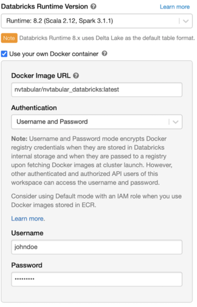

Cloud Integration#
Amazon Web Services#
Amazon Web Services (AWS) offers EC2 instances with NVIDIA GPU support. NVTabular can be used with 1x, 4x, or 8x GPU instances or multiple nodes. We’re using an EC2 instance with 8x NVIDIA A100 GPUs to demonstrate the steps below. Check out the $/h for this instance type and adjust the type.
To run NVTabular on the cloud using AWS, do the following:
Start the AWS EC2 instance with the NVIDIA Deep Learning AMI image using the aws-cli.
# Starts the P4D instance with 8x NVIDIA A100 GPUs (take a look at the $/h for this instance type before using them) aws ec2 run-instances --image-id ami-04c0416d6bd8e4b1f --count 1 --instance-type p4d.24xlarge --key-name <MyKeyPair> --security-groups <my-sg>
SSH into the machine.
Create a RAID volume by running the following command:
Depending on the EC2 instance, the machine may include local disk storage. We can optimize the performance by creating a RAID volume. Based on our experience, two NVMe volumes yield the best performance.
sudo mdadm --create --verbose /dev/md0 --level=0 --name=MY_RAID --raid-devices=2 /dev/nvme1n1 /dev/nvme2n1 sudo mkfs.ext4 -L MY_RAID /dev/md0 sudo mkdir -p /mnt/raid sudo mount LABEL=MY_RAID /mnt/raid sudo chmod -R 777 /mnt/raid # Copy dataset inside raid directory: cp -r data/ /mnt/raid/data/
Launch the NVTabular Docker container by running the following command:
docker run --gpus all --rm -it -p 8888:8888 -p 8797:8787 -p 8796:8786 --ipc=host --cap-add SYS_PTRACE -v /mnt/raid:/raid nvcr.io/nvidia/nvtabular:0.3 /bin/bash
Start the jupyter-lab server by running the following command:
jupyter-lab --allow-root --ip='0.0.0.0' --NotebookApp.token='<password>'
Google Cloud Platform#
The Google Cloud Platform (GCP) offers Compute Engine instances with NVIDIA GPU support. We’re using a VM with 8x NVIDIA A100 GPUs and eight local SSD-NVMe devices configured as RAID 0 to demonstrate the steps below.
To run NVTabular on the cloud using GCP, do the following:
Configure and create the VM as follows:
GPU: 8xA100 (a2-highgpu-8g)
Boot Disk: Ubuntu version 18.04
Storage: Local 8xSSD-NVMe
Install the NVIDIA drivers and CUDA by running the following commands:
curl -O https://developer.download.nvidia.com/compute/cuda/repos/ubuntu1804/x86_64/cuda-ubuntu1804.pin sudo mv cuda-ubuntu1804.pin /etc/apt/preferences.d/cuda-repository-pin-600 sudo apt-key adv --fetch-keys https://developer.download.nvidia.com/compute/cuda/repos/ubuntu1804/x86_64/7fa2af80.pub sudo add-apt-repository "deb https://developer.download.nvidia.com/compute/cuda/repos/ubuntu1804/x86_64/ /" sudo apt -y update sudo apt -y install cuda nvidia-smi # Check installation
For more information, refer to Install GPU drivers in the Google Cloud documentation.
Install Docker by running the following commands:
distribution=$(. /etc/os-release;echo $ID$VERSION_ID) \ && curl -s -L https://nvidia-merlin.github.io/nvidia-docker/gpgkey | sudo apt-key add - \ && curl -s -L https://nvidia-merlin.github.io/nvidia-docker/$distribution/nvidia-docker.list | sudo tee /etc/apt/sources.list.d/nvidia-docker.list sudo apt-get -y update sudo apt-get install -y nvidia-docker2 sudo systemctl restart docker sudo docker run --rm --gpus all nvidia/cuda:11.0-base nvidia-smi # Check Installation
Configure the storage as RAID 0 by running the following commands:
sudo mdadm --create --verbose /dev/md0 --level=0 --name=MY_RAID --raid-devices=2 /dev/nvme0n1 /dev/nvme0n2 sudo mkfs.ext4 -L MY_RAID /dev/md0 sudo mkdir -p /mnt/raid sudo mount LABEL=MY_RAID /mnt/raid sudo chmod -R 777 /mnt/raid # Copy data to RAID cp -r data/ /mnt/raid/data/
Run the container by running the following command:
docker run --gpus all --rm -it -p 8888:8888 -p 8797:8787 -p 8796:8786 --ipc=host --cap-add SYS_PTRACE -v /mnt/raid:/raid nvcr.io/nvidia/nvtabular:0.3 /bin/bash
Databricks#
Databricks has developed a web-based platform on top of Apache Spark to provide automated cluster management. Databricks currently supports custom containers
To run NVTabular on Databricks, do the following:
Create a custom NVTabular container using Databricks runtime.
NOTE: If any of the default dependencies that come with the Databricks cluster are changed to a different version, the Databricks cluster won’t be able to detect the Spark driver. As a workaround, the NVIDIA RAPIDS team has created a Docker container so that RAPIDS can run inside a Databricks cluster.
Extend the container and add NVTabular and PyTorch so that they can run inside Databricks.
Select the appropriate version of the NVTabular Conda repo.
NOTE: All versions of the NVTabular conda repo are listed here.
Clone the cloud-ml-example repo by running the following command:
git clone https://github.com/rapidsai/cloud-ml-examples.git
Add the selected version of the NVTabular Conda repo to the rapids-spec.txt file by running the following command:
cd databricks echo "https://conda.anaconda.org/nvidia/linux-64/nvtabular-0.6.1-py38_0.tar.bz2" >> docker/rapids-spec.txt
To install PyTorch, add the fastai pip package install to the Dockerfile by running the following command:
RUN pip install fastai
Build the container and push it to Docker Hub or the AWS Elastic Container Registry by running the following command:
docker build --tag <repo_name>/databricks_nvtabular:latest docker push <repo_name>/databricks_nvtabular:latest
Use the custom container to spin up the Databricks cluster.

Select a GPU node for the Worker and Driver. Once the Databricks cluster is up, NVTabular will be running inside of it.
AWS SageMaker#
AWS SageMaker is a service from AWS to “build, train and deploy machine learning” models. It automates and manages the MLOps workflow. It supports jupyter notebook instances enabling users to work directly in jupyter notebook/jupyter lab without any additional configurations. In this section, we will explain how to run NVIDIA Merlin (NVTabular) on AWS SageMaker notebook instances. We adopted the work from Eugene from his twitter post. We tested the workflow on February, 1st, 2022, but it is not integrated into our CI workflows. Future release of Merlin or Merlin’s dependencies can cause issues.
To run the movielens example on AWS SageMaker, do the following:
Login into your AWS console and select AWS SageMaker.
Select
Notebook->Notebook instances->Create notebook instance. Give the instance a name and select a notebook instance type with GPUs. For example, we selectedml.p3.2xlarge. Please review the associated costs with each instance type. As a platform identifier, selectnotebook-al2-v1. The previous platform identifier runs with TensorFlow 2.1.x and we had more issue to update it to TensorFlow 2.6.x. Thevolume sizecan be increased in the sectionAdditional configuration.After the instance is running, connect to jupyter lab.
Start a terminal to have access to the command line.
The image contains many conda environments, which requires ~60GB of disk space. You can remove some of them to free disk space in the folder
/home/ec2-user/anaconda3/envs/Clone the NVTabular repository and install the conda environment.
cd /home/ec2-user/SageMaker/
git clone https://github.com/NVIDIA-Merlin/NVTabular.git
conda env create -f=NVTabular/conda/environments/nvtabular_aws_sagemaker.yml
Activate the conda environment
source /home/ec2-user/anaconda3/etc/profile.d/conda.sh
conda activate nvtabular
Install additional packages, such as TensorFlow or PyTorch
pip install tensorflow-gpu
pip install torch
pip install graphviz
Install Transformer4Rec, torchmetrics and ipykernel
conda install -y -c nvidia -c rapidsai -c numba -c conda-forge transformers4rec
conda install -y torchmetrics ipykernel
Add conda environment as ipykernel
python -m ipykernel install --user --name=nvtabular
You can switch in jupyter lab and run the movielens example.
This workflow enables NVTabular ETL and training with TensorFlow or Pytorch. Deployment with Triton Inference Server will follow soon.